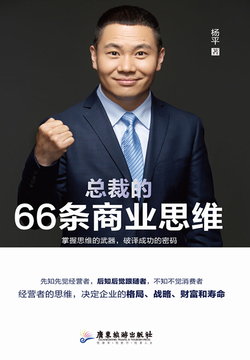

总裁的66条商业思维
杨平
- 版权信息
- 序 重塑商业思维，实现弯道超车
- 第一章 格局是思维的底层架构
- 先学会放大格局
- 请从未来回来的人帮你实现梦想
- 学习总裁商业思维的重要性
- 商业模式是制胜的关键
- 六维商业模式的构建
- 第二章 营销象限中的思维
- 品牌思维：好品牌=在心中烙下印记
- 营销思维：9%思考如何做产品，91%思考如何做营销
- 免费思维：免费是营销的孪生姐妹
- 补贴思维：以短期让利赢取长远利益
- 长尾思维：放长线才能钓大鱼
- 流量思维：看到流量的暗河
- 引流思维：只做流量的搬运工
- 借势思维：让牛人帮你做营销
- 愿景思维：描绘梦想的蛋糕
- 吹牛思维：吹牛和营销的分水岭
- 口碑思维：口口相传的事件营销
- 第三章 打开产品盒子里的礼物
- 产品思维：做好一个可被复制的产品
- 爆品思维：做到极致的产品
- 卖水思维：换个角度看淘金
- 微利思维：价值洼地的产品策略
- 领先思维：敢做第一个的优势
- 十倍思维：直接跳过竞争对手
- 复购思维：多次性消费产品的构建
- 超值思维：超值感服务的重要
- 势能思维：善用势能的力量
- 差异思维：异化中的不同性
- 用户思维：一切以用户需求为中心
- 边际成本思维：追求零边际成本
- 第四章 懂得用人的智慧
- 团队思维：集合力量，发挥能效最大值
- 用人思维：用人如用兵，结果决定一切
- 标准思维：能标准的才能批量复制
- 师承思维：名师即是捷径
- 赋能思维：能成长的团队才能持久发展
- 用师思维：善用高于自己的牛人
- 合伙思维：把人才变成合伙人
- 掌兵思维：菩萨心肠，霹雳手段
- PK思维：释放员工的狼性战斗力
- 冠军思维：重奖业绩第一名
- 分工思维：拆解工作中的小单元
- 人才免费思维：优秀人才是免费的
- 第五章 资源整合就是最大的流量池
- 整合思维：整合资源的方法论
- 跨界思维：“互联网+”的价值增值
- 圈子思维：圈子决定资源的边界
- 资本思维：善用资本，用资本赚钱
- 联盟思维：打通产业链的上下游
- 轻产思维：做好减法，优化资源利用
- 借力思维：调动一切可以调动的资源
- 舍得思维：大舍大得的因果律
- 内部客户思维：员工也是客户
- 贴牌思维：换一种方式进行资源整合
- 圈地思维：抢先占领空白区域
- 第六章 让管理从技术到艺术
- 目标思维：预则立，不预则废
- 计划思维：计划是执行的导航仪
- 执行思维：奖惩才是执行的关键
- 结果思维：结果管理的成效
- 平台思维：企业内部平台化
- 格局思维：看得更远，才能飞得更高
- 时间思维：把时间用在刀刃上
- 破局思维：用升维思考实现降维打击
- 效率思维：要做最有成效的工作
- 瞄准思维：先开枪后瞄准
- 聚焦思维：聚焦是专业的体现
- 第七章 创新维度中的新认知
- 裂变思维：做大做强的内核驱动力
- 共享思维：会分享的智慧
- 赛道思维：去做新的赛道冠军
- 垄断思维：商业的终极是走向垄断
- 渠道思维：渠道为王不过时
- 社群思维：建立社交经济体
- 冷启动思维：从朋友圈开始启动
- 分销思维：利益链上的动能
- 黏性思维：关系中的碎片化连接点
序 重塑商业思维，实现弯道超车
企业陷入生存危机的原因是多方面的，比如：缺乏创新精神，只知山寨，生搬硬套，这样的投机心理导致产品质量不佳，企业最终难逃被市场淘汰的命运；营销策略老套，难以适应迅猛的市场变化；人力资源配置不合理，中高层人才“青黄不接”，到需要时无人能堪大任；管理层目光短浅，缺乏战略思维，使企业深陷僵局；组织结构臃肿，工作效率低下；跨部门合作困难，组织内部沟通不畅
以最低成本赢得巨大流量的免费思维、补贴思维、引流思维，也有爆品思维、卖水思维、十倍创新思维、把事情做成事件的思维等高维度的产品思维，还有引导你通过资源整合打造流量池的跨界思维、轻产思维、舍得思维…
第一章 格局是思维的底层架构
所谓的格局，其实就是你所追求目标的高度、你眼界的广度、你思维的深度，以及你身上所体现出的从容大度。
棋局的赢家往往是那些有着先予后取的度量、统筹全局的高度、运筹帷幄而决胜千里的方略与气势的棋手。
格局的核心是“为了谁”
格局的尺度是“装多少”
抓住事物的要害、把握事物的规律
请从未来回来的人帮你实现梦想
一家公司怎样才能获得领先优势？就是在一开始的时候，就要找最牛的人做自己的合伙人，找最牛的人做自己的高管。
如果我们要想实现一个目标，最好的方法就是找一群从未来回来的人来帮我们实现。什么是“从未来回来的人”？就是那些曾经达成过这个目标的人。
下面是一位千万富翁与一位亿万富翁的对话，通过这段对话，我们可以知道与那些“从未来回来的人”在一起的重要性。“为什么你能成为亿万富翁，而我只能成为千万富翁呢，难道我还不够努力吗？”一位千万富翁向一位亿万富翁请教道。“你平时和什么人在一起？”“和我在一起的全都是千万富翁，他们都很有钱，很有素质……”那位千万富翁自豪地回答。“呵呵，我平时都是和亿万富翁在一起的，这就是我能成为亿万富翁，而你只能成为千万富翁的原因。”那位亿万富翁轻松地回答。只有第一名才能教我们怎样成为第一名，而我们要想成为第一名，就要与他们在一起，学着用他们的思维方式来思考问题。
学习总裁商业思维的重要性
人生成果=思维方式×热情×能力
所谓“商业”，就是有组织地为顾客提供产品和服务的行为。而“思维”，就是在表象、概念的基础上，进行分析、判断、综合、推理等认识活动的过程
利他思维
只要一心做有利于国民的事情，企业终究会获得成功
作为经营者的稻盛和夫手上连一分股票都未曾持有，却为一般的员工提供了购买股票的机会，让员工们从KDDI的发展中获益，以此来表达对员工为公司鞠躬尽瘁的感激之情。稻盛和夫的这种利他精神打动了每一位员工，使得员工们更加心甘情愿地为企业的壮大而奋斗。
就经营者而言，就是要把企业经营好，让员工、包括其家属在内的所有相关的人都能放心地把自己的人生托付给公司。这本身就是了不起的善举，就是为社会为世人尽力。
一些企业家缺乏成熟的商业思维，通常会表现出两种现象。一种是完全失去自我，放弃自己的路，一味地跟着别人走。如果别人不走了，自己就不知道应该怎么走接下来的路。还有一种是思维特别活跃，今天一个想法，明天一个想法，带着企业今天往东走，明天往西走，企业永远处于不断调整中，最后什么事也做不成。
拥有系统化的商业思维，也正因为如此，他们才能在繁杂的商业体系中布局各种产业。
繁简之间，我们首先要有简的能力，只有这样，才能在繁杂中不迷失。而商业思维的形成，让我们能更好地理解、关联和解释各种各样的商业现象，化繁为简，化难为易，直击本质，从而抓住成功的核心。
商业模式是制胜的关键
所谓的商业模式，就是一块钱在你的公司里转了一圈，最后变成了一块一。这增加的一毛钱，就是你的商业模式给你带来的增值。
彼得·德鲁克说过这样一句话：“当今企业之间的竞争，不是产品之间的竞争，而是商业模式之间的竞争。”
成功的商业模式必须符合以下原则。
一是实现客户价值最大化
二是持续赢利
三是有较强的创新能力
一个成功的商业模式不一定是指在技术上有突破，也可以是对企业运营的某个环节进行改造，或是颠覆游戏规则，对原有的模式进行重组和创新。商业模式的创新应该贯穿于企业经营的整个过程，因为在企业经营的任何一个环节上的创新都有可能成为成功的商业模式诞生的契机。
四是善于资源整合
成功的商业模式，能够做到对资源进行优化配置，使1+1＞2，发挥整体的优势，达到最优化。对资源进行整合，主要是优化产业链以及与相关环节的关系。好的商业模式能集中力量于产业链的某个或某几个重要环节，不断优化内部价值链，从而获得专业化优势，提高自己的核心竞争力。能明确企业产业链的核心价值环节，使管理者知道哪一部分是能够为自己赚来更多利润的，并将企业的主要资源都集中于此，从而培育核心能力，构建集中的竞争优势。与此同时，以各种方式与组成产业链的其他环节进行协同，紧密合作。同时，寻找“木桶”的短板，对产业链的薄弱环节进行强化，避免其影响整个企业的发展。
五是组织管理高效率运作
首先要为企业树立共同愿景、使命和核心价值观，这是一个企业生存、发展的动力源泉，也是人们愿意为你卖力工作的原因。并且还要有一套科学而又实用的运营管理系统，利用科学的管理方法，达到事半功倍的效果。除此之外，还要辅之以卓有成效的奖励激励方案，从而让员工分享企业的成长果实，形成向心力
六是保证融资的有效性
谁能够把资金问题解决，谁就能把握企业发展的先机，从而掌握市场的主动权。
七是风险控制
“风险”，既指企业的外部风险，如政策、法律和行业风险，也指企业的内部风险，如产品落后、员工变更，以及资金短缺，等等。对风险进行控制并不是要让企业在可能的风险面前停步不前，其最终目标是要针对风险，制定出相应的应对方案，使风险能够得到控制和被管理。
六维商业模式的构建
与其被动颠覆，不如主动求变。
不断升级你的商业模式，只有如此，才能建立起持久的竞争力。
商业模式可以分为六个维度：综合化、专业化、品牌化、标准化、平台化、资本化。
第一个维度：综合化综合化的商业模式什么都做，只要赚钱，来者不拒。
第二个维度：专业化
华为甚至把“聚焦”写进了《华为基本法》：为了使华为成为世界一流的设备供应商，我们将永不进入信息服务业。
《孙子兵法》里也讲过一个战略：“故形人而我无形，则我专而敌分。我专为一，敌分为十，是以十攻其一也，则我众敌寡；能以众击寡者，则吾之所与战者，约矣。”这段话的意思是说：让敌军暴露在我们面前，而我军始终隐蔽，那么，我军兵力就能集中，敌军兵力就不得不分散；我军集中在一点上，但敌军却分散在十个地方，那我们就可以用十倍的力量来打击敌人，此时就形成“敌寡我众”的有利局面；就算我们的实力稍弱，也能够战胜敌人。
第三个维度：品牌化
品牌是什么？就是在客户心里画上一个“=”。当客户想起某种产品时，第一时间就会想起这个品牌。比如，我们想继续跟别人联系，会说：“我们加个微信吧。”如果我们想喝可乐，买的不是百事可乐就是可口可乐。我们要换车的时候，奥迪、宝马、奔驰、大众、别克……这些汽车品牌会自动跳出来。这就是品牌效应。
品牌只有一个目的，就是在客户心中形成预售。什么是预售？就是客户虽然还没见到这个产品，但已经决定要买了，不需要比价格，也不需要谈条件，就愿意为这个产品买单。
第四个维度：标准化
实现标准化生产、标准化管理，才能大批量复制我们的业务，复制我们的成果，让品牌知名度持续扩大。
第五个维度：平台化
一旦形成标准化，必然会引发一种结果，就是垄断，而垄断就会造成平台化。达到这一维度后，我们才能让所有的资源为我们所用。
小米与其生态链公司之间形成了一种“竹林效应”：小米生态链公司如同一片竹林，初期公司从小米与生态链组织“根系”吸收养分快速长大，自力更生后又能为根系和其他企业供给养分，这样生态链企业形成了一种共生互助的关系，业务之间有较强的协同。
平台化，就是按照打造平台商业生态系统的方式来运作和管理企业，这是企业做大做强的必然途径。平台化商业模式使企业从原来封闭式运营变成开放式发展，在平台上，我们拥有的资源才能快速配置，到最后变成一个生态圈，这样就可以整合整个行业乃至全球的资源来实现企业的目标。
第六个维度：资本化
企业之间的竞争通常都是“大鱼吃小鱼”，要想成为“大鱼”，必须借助资本的力量，推动企业快速做大做强，进而展开并购，让自身快速成长为行业巨头。
引进雅虎作为战略投资者，一方面，阿里巴巴可不断获得最新的信息技术，另一方面，雅虎在国外发达的网络优势和品牌效应契合阿里巴巴的国际化战略，使阿里巴巴的本土化与国际化更好地结合。
第二章 营销象限中的思维
品牌思维：好品牌=在心中烙下印记
江小白采用了一种独特的包装，它的瓶身设计别致，瓶子上会印刷各种不同的语录，或是表达情感，或是发表对生活的见解，这种白酒瓶就是江小白特有的“表达瓶”。消费者还可以“DIY”（自己动手做），将自己的语录印刷到瓶身上。通过这种方式，江小白给年轻消费者一个释放情绪的出口，实现了情感的交流与互动，从而牢牢抓住了他们的心。江小白之所以能在很短的时间里实现品牌效应，是因为它卖的不是白酒，是情怀，是文化。
一个品牌要深入人心，不仅要专注于自身的产品，还要懂得消费者的心，找到属于自己的消费群体，与消费者建立情感，增强消费体验。在关注消费者的同时，还要注意进行适当的社会化媒体营销，在抓住消费者的心的同时，形成品牌价值链，把消费者的心牢牢锁在品牌上。
在所有的消费领域，消费者的消费导向完全以品牌为风向标，品牌已经成为人们消费选择的重中之重，一切营销的关键，都是围绕品牌而展开。
商业社会的竞争维度从低到高依次是产品销售、渠道竞争、广告宣传、品牌竞争，品牌是走进用户心智的高维度竞争。
一个拥有品牌思维的企业家在品牌刚刚开始创造的时候，就为品牌谋划好了前景，明确它未来会成为什么、会有什么样的影响力；在运营阶段，无论是进行公关传播，还是营销策划，还是线下活动，都会关注核心点—达到最大程度扩大品牌的知名度；在管理品牌的时候，知道什么是必须避开的雷区，知道什么原则是必须坚持的，知道为了品牌该做什么，不该做什么；在企业资本运作阶段，知道如何利用资本来把品牌做得更有知名度，实现品牌资产化。否则，你的品牌会是缺乏“魂”的品牌，永远都不可能赢得客户的认可。
1．建立一个独一无二的视觉符号
比如江小白的包装，以蓝色、白色的完美组合，赋予江小白青春的活力：100ml磨砂扁玻璃瓶装打破了传统白酒包装“酒坛”的形状，抓人眼球；戴眼镜系围巾的年轻小伙子的卡通形象，将品牌拟人化，更加亲近年轻人。这样的品牌形象，让人一见难忘。
2．给品牌一个明确的定位
一提到品牌名，就能够让客户联想到这个品牌的形象。品牌的定位一定要和产品的个性概念结合起来，这样才能够让客户将之区别于其他品牌。
3．让你的品牌“讲故事”
4．给客户一个承诺
每个人都爱偷懒，人们不愿意在每次购物时都比来比去，如果有一个品牌能够在他们重视的某个点上，比如安全性、价格、质量等方面，给他们足够的承诺，他们就会选择它。
有个性、有创意、有情怀的卓越品牌，才能勇立潮头，聚合粉丝，自带“流量”，形成“现象”。
营销思维：9%思考如何做产品，91%思考如何做营销
营销思维：9%思考如何做产品，91%思考如何做营销
通过各种方式来吸引客户，让客户主动来买。
创造一种“让人想要购买的欲望”。爱马仕的产品，很多都是“有钱也买不到”。门市里偶有“凯莉包”，但“柏金包”却只限展示，无法购买。决定购买的客人，必须亲自到专卖店预约下单，并且亲自决定产品的定制细节，比如皮革的颜色，金属扣环的款式等。下单之后，因为产能受限，客户需要等待很长的一段时间才能拿到产品。这样稀缺性的目的不仅为了引起人们的羡慕，让人们非常希望拥有，同时也满足了拥有者被人羡慕和炫耀身份地位的虚荣心理。
爱马仕只服务于顶级客户，它的定位非常明确，放弃80%的大众客户群而紧紧抓住那20%的尖端客户。
爱马仕还有一个VIP优先服务的规则，有些产品即使是名人如果不是爱马仕VIP的话也没法优先得到。这使得爱马仕客户的消费场景非常私密，也很等级化，来这里购物的人会感受到一种前所未有的荣耀感与尊贵感。
爱马仕一直以来都坚持经典设计、限量发售、线下销售的模式，即使有营销活动也只是针对业内人士的室内庆祝，这就会使客户产生“饥饿效应”，这种饥饿效应能够激发客户对于爱马仕的好奇心和渴求，甚至限量定制款的包包，会出现预定抢购的现象。
真正的营销不是你让人家来买，而是吊人胃口，让人主动来买。
营销早就已经开始了，从招牌到店面装修风格，从橱窗到货架陈列等一系列的环境已经让客户在自我销售了，这就是营销！
站在对方的角度思考，而且要100%站在对方的角度思考。只有进入客户的心，了解他们的大脑是如何思考的，才能让我们的营销真正发挥作用。
用91%的时间来思考如何做营销，从本质上来说，就是用91%的时间来找客户的需求点。站在客户的立场上，设身处地了解他们的想法和需求，找到问题的突破口，才能切中客户的脉，挠中他们的“痒痒肉”，才能真正激发客户的购买欲望。
1．希望得到：健康、物质、时间、金钱、成就感、赞美、美丽、成长、长寿……2．希望成为：对社会有价值的人、成功者、好的父母、孝顺的儿女、合格的爱人、能影响他人的人……3．希望去做：欣赏世界的美、获取他人的爱、不断成长进步、满足自己的欲望……
把“帮客户买”放到比“卖给客户”更重要的位置上
免费思维：免费是营销的孪生姐妹
免费是打开消费者心门的钥匙，一切免费都能创造出成交的可能
在互联网时代，唯一不会被打败的生意，就是胆敢做不赚钱的生意。
电子商务的核心就是比谁拥有的消费用户多，只要用户存在，以后总是会持续消费的。
当你确定这个客户会给你带来创造利润的机会时，你就在前端设一个免费的产品吸引他的注意力，一切免费都会创造出成交的可能。一切资源的整合，都是首先从你免费为他服务开始的。
免费思维的核心有两个，一是在用户黏度高的产品中免费
二是在别人都收费并且客户习惯了付费的领域免费
通过免费思维，聚来大量的用户，有了足够的用户后，可以从哪些方面产生利润呢？
1．广告付费
2．高利润产品捆绑
比如，移动、联通等运营商“充话费送手机”等促销活动就属于这种盈利方式。
3．增值服务
在产品里提供一些个性化的功能，用户可以通过支付的方式获取这类服务，让用户有一种特殊的荣誉感，比如QQ会员，各大视频网站的VIP会员功能。
大数据服务、小众用户个性化定制、产品延伸等也可以通过免费产品来提高企业价值。
补贴思维：以短期让利赢取长远利益
补贴思维，不在于烧了多少钱，而在于用钱烧出核心竞争力，在于以短期让利赢取长远利益。
什么是补贴思维？就是不光对消费者免费，而且还要“倒贴”，通过红包、返现、现金奖励、折扣等多种多样的方式，来吸引用户、引爆用户增长，并通过短期的让利来留住用户，从而谋求更大、更长远的利益。
互联网模式与传统生意经的差异在于其“盈利后置”，他们之所以对用户进行补贴，是为了更好地引流量、圈用户。互联网思维的一个核心理念是“先圈用户后圈钱”。当圈来的用户足够多时，就可以通过各种各样的商业手段催化其产生价值。
1．产品是根本，补贴是工具
如果产品本身竞争力不强，没有留存度，用户的增长和留存过度依赖补贴，一旦补贴停止用户就不来了
2．做好用户分群、维度细分
眉毛胡子一把抓，不做用户分群，不做维度细分（如市场环境、价值状况、时间、地域、品类、生命周期等），就会造成补贴资源严重浪费。
有的用户忠诚度高，对补贴不敏感，就不需要补贴，给他们补贴就很可能是浪费；有的用户对补贴敏感度高，且又有很强的购买力，就应该加大力度补贴，把钱花在这些用户身上是划算的；还有的用户对补贴敏感度高，但是用户价值低，对这些用户补贴的意义就不大。
3．合理运用补贴营销工具
在开始补贴之前首先要明确我们的目标是什么，然后确定采取什么样的补贴手段，需要什么样的营销工具，补贴多大力度，达到什么样的效果。
长尾思维：放长线才能钓大鱼
这些用户身上一定存在着能让我们赚到钱的利润点，所以我们才会愿意免费甚至倒贴。
如何才能利用长尾思维，激发更多消费者的购买力？
1．让更多消费者参与到生产中来
可以挖掘出消费者的更多需求，可以使我们向“长尾”市场的深处继续拓展，也可以降低生产成本，提高效率。
2．采用更丰富的传播渠道
3．不要妄想靠一种产品就能满足所有人
只有多种产品组合，才能在“长尾”市场上赢得更多的消费者。
流量思维：看到流量的暗河
扩大流量，只要客户留下痕迹，就能产出成交的机会。
如果要开一家店，必须选择一个好的位置，位置好才能人流多，商家的竞争就在于占领商圈、旺铺和好地段，所以俗话说“金角银边”。
占据流量入口。
为了实现这一点，“三只松鼠”精选了一个单品，大幅度进行降价促销，使其在很短的时间里进入了坚果类食品销售榜的前三。“三只松鼠”有一个专门的数据推广部门，数据分析的对象包括：每天的销售额，来自于哪些流量，多少来自于老顾客等，然后针对这些制定每次的投放计划。
关于流量变现，有两个问题需要企业家们思考清楚。
1．变现时间：现在还是未来
第一，看流量是否能够持续。如果流量只能持续很短的一段时间，必须尽快将其变现。如果流量是可持续的，还在快速增长阶段，变现的时间可以推迟。
第二，看变现方式对用户体验的影响如何。如果采用的变现方式（如推出一些付费产品等）会影响到原来的流量，那么，就需要推迟流量变现。
2．变现方式：卖流量还是卖产品
大多数企业的流量变现方式都属于卖产品，也就是从大量流量用户中挑选潜在的产品“消费者”，从中获得利润。但有一些企业采用卖流量的变现方式，比如网站刊登广告、为电商商铺导流、导购网站等，这类商业模式本质上就是“卖流量”。
无论是卖流量还是卖产品都应注意，将用户引导到的区域和产品，不应该对流量初始地点和品牌造成损害，否则就会影响后续流量的进入，等于杀鸡取卵，得不偿失。
引流思维：只做流量的搬运工
引流思维：只做流量的搬运工
引流的唯一准则就是：不管是线上还是线下，去人多的地方，提供有价值的产品或者服务。
在企业经营中，引流思维如何发挥作用？最重要的就是，你要忘记销售，忘记产品，甚至忘记你自己，一心一意思考你的客户缺什么、需要什么、对什么感兴趣、他们的痛点有哪些，然后针对他们的需求点、兴趣点和痛点来采取恰当的引流。
线上创新内容的广泛传播，辐射到线下实体店，为实体店带来了巨大的流量。
一是打造卓越的品牌
品牌自带强大的引流功能。
二是做好产品，把握根本
好的产品能够形成流量池，能使客户重复购买，口碑相传，牢牢圈住一群忠实客户，并且只要产品持续优质，流量池就会越来越大。
三是善于利用价格的引流作用
免费、低价或补贴能吸引大量用户，这本身就是一种引流。
四是选择合适的渠道
渠道本身就是为流量而生。京东与微信合作
五是通过促销来引流
促销的目的就是为了引流，其精髓就在于聚集大量的人气，形成狂热的购买氛围，让那些想买又不想买的顾客在购买氛围中做出购买的决定。
引流不是短期刺激，需要的是长期坚持。
．搜索引擎引流搜索引擎引流是最直接有效的方式，包括SEO（搜索引擎优化）和SEM（搜索引擎营销）。
2.SNS社交媒体引流SNS（社会网络服务）社交媒体营销是当下最流行的引流方式，微信、微博、QQ都是非常实用、有效的引流工具。
3．短视频APP引流抖音、快手、秒拍、美拍、小咖秀等都是热门短视频APP
在这些APP上进行引流，应该尽可能争取首页热门、频道推荐、排行榜等位置，因为成本最低的方式是借助别人的流量。
4．直播引流直播打破了时间的限制、颠覆了空间的局限性、重组了视觉、迭代了宣传形式，实现了多向互动、多方关注和多角度展示。
知乎引流、豆瓣引流、视频网站引流
借势思维：让牛人帮你做营销
借势思维：让牛人帮你做营销借势思维，其实就是扯虎皮做大旗，虚张声势，借他人之势，让客户产生对我们有利的想法。
《孙子兵法》中说：“故善战者，求之于势”。意思是，善于打仗的人，会充分利用天时、地利等形势。有的时候，我们个人的力量不足以完成某件事，这时就要学会借势。
小企业做事，中企业做市，大企业做势。我们要记住，一切皆可借势，无不可借之势，无不可借之人。只要善于借势，我们就能以更低的成本、更快的速度得到市场及消费者的认可。
借势思维的四个法则。
1．找到与品牌调性相匹配的点
借势思维可以借助任何人、任何事来进行营销，不过，一定要找到与品牌定位有关联的切入点，否则就毫无意义，甚至会起到反作用。
2．无不可借之事所有被目标客户关注的人和事我们都应该去关注、去了解，一方面可以更好地了解用户更真实的一面，另一方面可以源源不断地获得可借势的内容。
3．无不可借之人借势思维中要借助“牛人”来做营销、做内容，而所谓的“牛人”，要么是自带流量的人，比如明星、大咖，要么是目标客户群体和他们的意见领袖。
4．常用常新借势思维可以天马行空，但想要落地都必须遵循一个原则：找到合适的切入口，带入自己的产品、卖点、价值或价值观。
们利用借势思维做营销，应该更稳妥地从产品和服务本身、产品受众、服务人群、消费场景、产品价值等直接相关的内容去切入。
愿景思维：描绘梦想的蛋糕
愿景思维：描绘梦想的蛋糕人生重要的不是所站的位置，而是所朝的方向。《基业长青》的作者詹姆斯·柯林斯说：“一个企业从优秀到卓越，最重要的标志是能提出超乎利润之上的终极追求。”日本企业家孙正义也说：“不提愿景的领导，不是好领导。”
描绘愿景就是描绘梦想的蛋糕，其目的不是为目前充饥，而是让人们将眼光放长远，从而激发出内在的动力。
．愿景=核心理念+未来图景
核心理念是企业愿景方案中的“阴”，定义着企业的理念与存在理由，一旦确立就不应随意改变。未来图景是“阳”，是我们渴望成为、渴望得到和渴望创造的，会随着企业发展做出适当调整。
2．愿景由多个呈阶梯状的目标组成
目标需要有阶段性，每一个目标完成后，才会具体实现下一个目标。
3．愿景应该是跳起来够一够就可以实现的，而不是画饼充饥你为企业勾画的愿景不要像空中楼阁，不要画饼充饥，要有理有据，这样才能在期待中一步步将其实现。4．让更多人参与到愿景的设立中来让更多的人参与你的愿景，这样的愿景才能最大限度地符合更多人的预期，才能对企业产生更大的激励作用。
吹牛思维：吹牛和营销的分水岭
吹牛不要紧，要紧的是把吹过的牛都实现了，这样你才是真的牛。
1．吹牛体现的是一种领导力
有领导力的人乐于并善于将企业愿景描述给企业中的所有人，通过“吹牛”这种方式让大家找到企业愿景与自己的关系，看到前景、看到未来，从而为实现这个目标而努力。
务实也要能务虚，想得到才能做得到
在企业中，我们崇尚实干，鼓励脚踏实地。但作为企业的管理者，只务实是不够的，还必须具备务虚的能力（吹牛的能力），因为吹牛的能力和水平往往代表着一个企业家的追求和境界。有一些前瞻性的东西，我们想到了未必能够做到，但是如果想都想不到、想都不敢想，要去实现它就更不可能了。敢于吹牛，敢于制定宏伟的目标，是向成功迈出的第一步。
口碑思维：口口相传的事件营销
在互联网时代，好口碑胜过万语千言—根据统计，一个满意客户会引发八笔潜在的买卖，其中，至少有一笔可以成交。
92%的用户更信任认识的人的推荐，77%的用户则会愿意购买朋友或家人推荐的新产品。这一切都是因为利用互联网的聚焦效应能把舆论影响放大，让我们想传播的信息呈裂变式扩散。
与其让营销团队“王婆卖瓜”式地自夸公司产品，不如让客户自发传播口碑，帮你做宣传。
星巴克公司要求员工必须精通咖啡的知识以及制作咖啡饮料的方法。除了为消费者提供优质的服务外，顾客问起的时候，还要能够向消费者详细介绍这些知识和方法，靠员工（服务员）向消费者口传身授星巴克品牌的内涵。星巴克还采用各种各样的方式鼓励消费者之间、消费者与星巴克员工之间进行口头或书面的交流，使消费者们把拥有“星巴克体验”作为巨大的精神财富。
1．鼓励用户主动分享
2．提供远超所值的产品或服务
我们要做的是超出客户的期待，甚至超出他们以往的所有体验。要实现这一点，我们可以把客户服务的标准从“令人满意”转变为“令人难忘”。
3．主动创造人们口碑相传的机会是什么让人们想起并记住你？凭什么人们在朋友圈中推荐你？除了你给消费者留下愉快的消费经历之外，非常重要的是，企业要在消费者中埋下口碑的种子，要让人们主动去和别人交流，并推荐你，这些依赖于企业提供给消费者的增值服务，甚至是一些附加的东西，这就好像吃东西，只有回味无穷的东西人们才能长久记住。
4．保持畅通的沟通渠道企业需要组建自己的网站、微博、微信以及论坛平台，这样既便于向消费者传达商家的理念，让消费者了解企业的现状，也可以为消费者提供一个传达心声、解决诉求的渠道，让商家和消费者有效互动。5．分享品牌故事一个产品需要有一个能够传达品牌精神的故事，能够将品牌背后的付出与用心展示给消费者，让消费者既能够看到企业的产品，也能够了解企业的理念与精神。
第三章 打开产品盒子里的礼物
产品思维：做好一个可被复制的产品
一流的企业做标准，二流的企业做品牌，三流的企业做产品。”产品最重要的特点是什么？是可复制性。而复制的前提是标准。
我们做一个产品，在创业初期就应该考虑到规模化生产的需要，要尽可能地标准化，从而保证一致、稳定的供应，而且，制作产品的工艺与流程最好不要依赖于某个特定的人，而是机器或者大部分人都能够完成。
产品的标准化应该是把人性化、个性化记录在内的标准化，是更进一步的标准化。
高度的标准化往往会导致高度的同质化。所以，我们想提升自己产品的竞争力，就要实现“复杂”的标准化。
为保证品质的标准化，西贝莜面村还从国外引进了方便且精确的食料计量工具，以前，厨师倒油放盐都是用炒勺，到底放了多少，再有经验的厨师也很难做到完全有数。而更换计量工具后，盐粒换成了盐水，放一量杯就相当于一克盐；专用的油壶则带有控制装置，每倒一次只出规定的量。厨师不再按照个人经验进行烹饪，而是对配料量化处理，从而实现了口味的标准化。
西贝莜面村对上游食材的采购也进行标准化管理，采购团队按照资质、生产条件、生产规模等几个指标对供货源的等级进行划分，支持等级高的，淘汰等级低的，同时，就食材的生长时间、除虫、饲料、肥料等与供应商进行约定，用严格的标准而非经验，以保证食材的品质。
那么，怎么才能做好一个可被复制的产品？
1．把产品的使用性能和用户需求放在最重要位置
2．让做标准的、执行标准的人参与建立标准的过程
3．引导员工形成良性认知
爆品思维：做到极致的产品
爆品思维：做到极致的产品
你要超越对手，要黏住客户，要获得竞争优势，就必须做专、做精、做深，把简单的事情做到极致。
观念误区。
误区1：一次到位
即使再伟大的产品，也需要一点一滴不断完善。一个产品最后能成功，都不是一招制敌，至少需要几年时间的打磨，需要不间断的尝试、改进。
误区2：一劳永逸
消费者需求不断升级，你的产品不更新，自然会被淘汰。
误区3：闭门造车
卖水思维：换个角度看淘金
如果你在淘金的地方找到卖水的生意，你就能成功。
逆向思考力是指悖逆人们的习惯路线去进行思考的一种思维方式，拥有这种思维的人不盲目跟风，不做大多数，因此总能看到别人看不到的机遇。
善用卖水思维，需要注意以下几点。
1．养成独立思考的习惯
用一个小时思考胜于十天盲目工作。怎样独立思考？第一，不盲从、不依赖、不轻信。第二，独立寻找解决问题的方法。第三，远离懒惰和习惯性思维。
2．换个角度看问题
3．逆向思考
当你遇到棘手的事情，苦于找不到好的解决方法的时候，可以改变原先的思考习惯，进行逆向思考。敢于想别人所不敢想，做别人所不敢做，才能实现别人所不能实现的成就。
微利思维：价值洼地的产品策略
很多人存在着一个误区：做事情一定要做毛利润高的，但从另一个角度来说，毛利润高就意味着这个行业的竞争非常激烈。在一片红海之中，如果你做不到行业中的第一名、第二名，那你只能被市场淘汰。
如果你有一个产品利润率非常低，低到其他同行都不屑于去销售，这时，你就可以把它拿来与其他产品捆绑，用它来形成对客户的一种诱惑，从而吸引源源不断的客户。最终，你的这个毛利润非常低的产品或许不赚钱，但那个与它捆绑在一起的产品却能让你赚到钱。
为了防止顾客对于盈利商品进行比价，沃尔玛还有很多自有品牌的商品。这些商品的毛利率更高，有的甚至能达到70%。
企业家不要把目光一味投放在毛利润很高的产品上，更不要指望凭借某个产品就能赚大钱，而应该把经营思维调整到整体、持久的综合效应上来，树立微利赚钱的长远思想。
怎样才能用微利产品带动其他高利润产品的销售？
1．以消费者需求为导向，选择合适的微利产品
2．强调微利产品的性价比，降低消费者的价格敏感度
消费者买的不是东西，而是期望。所以，所谓微利思维，不是要“1+1=2”，而是要达到“1+1＞2”的效果，需要讲究各个产品之间的搭配与相互促进，并强化微利产品的性价比，尽可能降低消费者的价格敏感度。简单来说，就是要让消费者觉得“划算”。
3．赋予微利产品更多的社会价值，形成品牌共鸣和社会认同
领先思维：敢做第一个的优势
领先思维：敢做第一个的优势
我们做任何行业都要记住，一定要抢先。行业中第一个吃螃蟹的人，总是自带势能的，所有人的目光都会聚焦于此，无形之中就会吸引来无数流量，广告效应是任何宣传推广都无法比拟的。这就是领先思维，只要你敢做第一个，就会建立起巨大的优势。
与其与他人共抢一块蛋糕，不如做第一个吃螃蟹的人。先行者“吃肉”，而后来者只能“喝汤”！
如何才能成为“第一个”？1．成为细分市场的第一个任何一个市场都可以根据消费者的地域、年龄、性别、需求等种因素划分为无数个细分市场。与其在与对手的竞争中疲于奔命，不如重视市场细分，从市场细分中寻找自己具有相对优势的细分市场，在这个细分市场中抢占先机，争做第一个，抓住机会建立产品优势。2．成为某一区域的第一个
十倍思维：直接跳过竞争对手
十倍思维：直接跳过竞争对手市场的后来者要想参与竞争，务必要在领先者忽略的部分找到一个可以超越对手十倍的突破点，这样才能快速形成局部优势。
永远不要做从背后追赶的人，也不要做弯道超车的人，要做就做从头部越过的人。
什么是十倍思维？不是要比对手好10%，而是要好十倍，只有这样，客户才会有动力，愿意挣脱对现有产品的依赖，冒着风险去尝试你的产品。也只有这样，我们才能打破常规，用一种颠覆式创新的方式解决问题。当然，十倍只是一个约数，真正的意义在于，十倍会产生数量级的差异，在企业经营中，不同的数量级，有不同的玩法。差十倍就差一个数量级，属于不同的维度，以高维打低维，成功可以说唾手可得。
如果你做的每一件事是把眼光放到未来三年，和你同台竞技的人很多，但是如果你的目光能放到未来七年，那么可以和你竞争的就很少了。因为很少有公司愿意做那么长远的打算。
1．颠覆式创新
2．专注优势，把优势做到极致
3．进入一个变化足够大的市场
复购思维：多次性消费产品的构建
复购思维：多次性消费产品的构建把复购当成一切营销的核心，才是产品持续不断的生命力源泉。
我们所有的营销都是为了引导、刺激消费者重复购买、持续性购买。
所谓的复购思维，就是一切不能形成复购的产品或业务都不要做。在开发产品或业务的时候，我们必须问问自己：这个产品或业务能不能形成客户的复购？如果客户买了一次就不会再来购买，这样的产品最好放弃。
当用户第一次注册饿了么的时候，就会收到饿了么发放的“新客专享红包”，这个红包一般是首单立减一定金额的优惠券，设置了使用期限，从而促使新用户在注册后尽快下单购买。用户完成第一单购买后，饿了么又向用户发放新的红包，作为首单购买激励，以刺激用户二次复购。当用户在饿了么进行过几次消费，已经对这个平台产生一定的依赖性之后，饿了么会向其发放品类红包和店铺专享红包，并且提升购买门槛，缩短使用期限，引导用户进行多品类、更大金额、更高频次的消费。这些红包的目的在于提升用户购买频次，提高购买金额和扩大购买类型。除了以上红包，饿了么还会向用户发放“推荐有奖红包”，通过老用户向周边朋友发送邀请的方式，获取新的用户注册下单。只要对方接受邀请并下单，老用户就能获得红包，而且红包不仅可以用于消费，还可以提现。这一环节中，商家既获得了新用户，又增强了老用户对产品的忠诚度，再次提高复购率。
与新客户的获取成本相比，维护老客户从而提升复购率的成本要低得多。
我们做产品，就要做一个能使消费者多次性消费的产品。而构建这样一个产品，首先要考虑的是产品的自身品类属性。影响用户购买的最大的因素就是产品本身用户是否需要，用户是否需要今天买了明天还买。
产品的品质是立足之本，无论你经营的是什么产品，最重要的是要保证这个产品能吸引人，能赢得客户信任。
在一次销售完成之后，我们还需要进一步加强与客户之间的联系，为后续的复购打好基础
如何才能促使消费者重复购买？我们可以这样发挥复购思维：1．找准尖刀产品
2．不断提升产品的附加值
把产品附加上文化和特质才能提高销售率，培养出忠实客户。
3．做好老客户维护
在销售领域有一个黄金法则：开发十个新客户不如留住一个老客户。老客户是企业发展的基石。了解老客户，为他们提供针对性服务，多向老用户寻求反馈，问问他们对你的产品、服务有什么评价，鼓励他们说出自己的意见，提高老客户的忠诚度，复购率自然会提升。
超值思维：超值感服务的重要
超值思维：超值感服务的重要
沃伦·巴菲特曾经说过一句话：“能让客户感到惊喜的企业相当于拥有了一个免费的销售团队，你看不见他们，但他们却无时无刻不在替你宣传。”
我还能为我的客户做些什么？
1．给客户真诚的爱
用真诚、理解和友善的方式与他们打交道，努力做他们的朋友。
2．认识竞争对手认识竞争对手，不是为了打败他，而是为了给客户提供超值的服务。我们要学习竞争对手的卓越之处，同时，也要避免他们的错误，完善自己的服务。
3．成为专家成为自己所在行业的专家，才能给客户提供更全面、更新的信息，才能更好地为他们解决遇到的难题。当其他人解决不了的问题，我们轻而易举就能解决时，客户会给予我们最大的信任。
4．成交后，继续服务客户我们所服务的每一位客户，都会给我们带来潜在客户。因此，成交不是交易的完成，而是新的交易的开始。
势能思维：善用势能的力量
“激水之疾，至于漂石者，势也。”
能就是外部的大环境和企业内部的资源。谋局必先谋势，善谋势者必成大事。
在眼球经济的时代，没有什么比吸引公众的注意力、引起社会舆论的最广泛关注更有推动力和杀伤力的了。
从本质上来说，企业之间最高层面的竞争不是产品功能的竞争，而是消费者认知的竞争。
我们应如何利用势能的力量呢？1．可以借助自带流量的明星、名人等，使其发挥意见领袖的作用
2．可以借助一些社会热点为产品造势
借助热点造势，在原有热点的基础上，发挥想象力、挖掘自身的素材，无中生有、化小为大，营造出自己的热度，是一个扩大产品知名度的好方法。
3．借势搞活动也能达到轰动一时的效果
差异思维：异化中的不同性
差异思维：异化中的不同性差异化的本质，是为顾客提供一种选择你而不是别人的理由。
在战略层面上，差异化所表现出来的更多是一种“定位”的概念，这种差异化是企业必须要长期坚持的，不能怕别的企业跟进。
在战术层面，差异化表现出来的更多是“创意”的概念，这种差异化可以根据企业资源及时进行更新。比如，产品功能差异化，可以根据时机不断更新换代，但不能与战略层面的差异化策略产生冲突。
这有三个条件：消费者关注的、竞争对手没有的、自身十分擅长的。只有找到同时具备这三个条件的差异点才能使企业真正营造出比对手更强的优势，从而获得消费者的认同。
在差异化经营中，也不能忽视核心竞争力的培育与提升。
企业要想在竞争中获胜，就要不断对差异点进行创新，用创新去适应消费者需求的变化，真正实现企业的“差异制胜”。
怎样才能制定出适合自己企业的差异化策略呢？可以从以下三个方面入手。1．产品差异化
对于任何一家企业而言，产品和服务都是发展的基础。
2．细分市场差异化
3．渠道差异化
用户思维：一切以用户需求为中心
用户思维，就是“一切以用户需求为中心”，站在用户的角度来换位思考。
在消费饱和的时代，必须站在心理学而不是经济学的观点来思考。换言之，我们卖的不是产品，是人的需求。
培养用户思维，从了解我们的用户开始。我们应该“从用户中来，到用户中去”，去和用户交流，了解他们是什么样的一个群体，最关心的是什么，对我们的产品和服务有什么看法。只有了解用户，才能打动用户。
塑造产品价值、传递产品价值，让用户了解并接纳产品价值。
我们需要告诉用户他所不知道的产品和服务背后的知识，告诉用户如何更有效地享受这件产品或服务。
用户的需求贯穿于市场、研发、销售、制造、服务的全流程，谁能掌握用户思维，谁就能抓住用户，谁就能占据市场。
1．以用户需求作为产品设计的原动力，坚守用户价值作为产品的核心价值
用户比利润更重要，每当我们要设计新产品的时候，应该首先了解用户将对此做出怎样的反应。以产品为导向，就必须在市场的引导下完成一切工作，包括决策、投资、改革等，如果你不知道用户要的是什么，就不会有正确的目标和战略。
2．心中时刻想着用户，站在用户角度进行思考
3．到生活中去，不断提高用户思维
边际成本思维：追求零边际成本
我们所做的产品和业务都应该追求零边际成本，实现边际效益最大。做一次就能卖一千次的产品，这样的产品或业务才是值得我们去做的。
在经济学中，边际成本指的是每一单位新增的产品（或者购买的产品）带来的总成本的增量。这个概念表明，每一单位的产品的成本与总产品量有关。比如，仅生产一辆汽车的成本是极其巨大的，而生产第101辆汽车的成本就低得多，而生产第10000辆汽车的成本就更低了。再比如，微软的操作系统投入巨大，但每多生产一份拷贝光盘的边际成本几乎为零。
传统行业怎样才能将边际成本大大降低，甚至使其趋向于零？
1．向“互联网+传统行业”模式转变
每个行业的边际成本最终会回归到资源成本，资源成本包括原料资源和人力资源。比如电子书相比实体书省去了纸张、印刷等成本。电子支付也大大省去了人力支付操作成本。如果生产制造自动化，比如理想情况下所有动作都交给机器人完成，那也会大大降低边际成本。
2．向“实体产品+虚拟服务”模式转变
现在很多产品的趋势逐步变成“实体产品+虚拟服务”。比如电视+媒体库，电话机+话费等，用降低实体产品的价格（甚至零元购机）等方式，来促进虚拟服务达到趋近于零的边际成本。电视+媒体库，使得电视免费，比如小米盒子。电话机+话费，导致电话机免费，比如电信运营商。
第四章 懂得用人的智慧
团队思维：集合力量，发挥能效最大值企业的第一产品是团队。
通用电话电子公司董事长查尔斯·李曾经说过：“最好的CEO是通过构建他们的团队来达成梦想，即便是迈克尔·乔丹，也需要队友来一起打比赛。”一个人可以走得很快，一群人却能走得更远。
“同心山成玉，协力土变金”，团队协作是企业成功的基础，只有依靠团结的力量才能把个人的愿望和团队的目标结合起来，发挥团队的力量，把企业做大做强。这就是团队思维的真谛。
要发挥团队思维，企业家首先要充分考虑下属的利益。员工从企业获得利益，从而满足生存和发展的基本需求。
企业家应该为员工提供在同一行业中更有竞争力的薪酬，以满足员工基本的生存需求，给员工稳定感和安全感，从而坚定对企业的信心。应在企业中建立贡献与报酬相称的分配机制，根据员工的工作成果和绩效给予合理的报酬，奖勤罚懒，奖优罚劣，重奖有突出贡献的人员，使利益导向与企业目标趋于一致，从而激发员工的工作热情。实行内部股份制和期权、期股制，让员工以资本和技术等生产要素参与利益分红，从长远利益上实现更多和更加紧密的联系。
团队思维的另一个体现是为员工提供良好的个人发展空间。
在海尔，有一个与众不同的选拔原则，用一句话来说就是：人人是人才，赛马不相马。
一个企业的领导者最重要的职责不是发现人才，到处搜罗人才，而是建立一个完善的人才机制，并使其健康有效地运转下去。这个机制应该为每一个员工提供同样的竞争机会，在企业中营造浓郁的竞争氛围，让他们以业绩论英雄。通过这种方式，在很大程度上避免了“相马”的局限性和主观性。
海尔制定了一系列严谨而客观的“赛马规则”。首先是在位监控。在海尔，每个员工都要树立起一种自我控制、自我约束的自律意识，除了这种内部监控，海尔建立了外部控制体系，帮助员工控制工作方向、工作目标，避免在工作中出现根本性的错误。此外，每个员工还要接受所在班组内的其他成员以及业绩考核部门的监督。每月还会对员工进行五个方面的评估打分，包括创新意识、解决问题能力、市场信誉以及财务控制能力等，根据最后的分数划分为三个等级。
其次是届满轮换。
当员工在某个岗位任期已满，海尔集团就会根据企业总体战略发展以及个人发展的需要，把他们调到其他岗位，让他们对企业的多个领域都能有所了解，从而培养长远的眼光及对全局的掌控能力。
在海尔集团，最具有杀伤力的一招就是三工并存、动态转换制度。三工指的是优秀员工、合格员工及试用员工（临时工），根据员工在工作中表现出来的精神面貌、工作态度以及绩效，这三种身份可以进行动态转换。如果员工今天工作不尽职，那么明天就要努力去找工作了。而那些表现优异的员工就可以及时转化为合格员工或优秀员工。
海尔内部还采取竞争上岗的方式，当企业中出现职位空缺的时候，就会在公告栏中广而告之，任何员工都可以去参加竞争，胜出者就可以获得这个职位。
是否能够使员工对企业产生归属感，是团队建设的关键所在。员工对企业不信任、缺乏对团队的归属感，他们工作的热情和实力就不会被完全激发出来。如果员工对企业有了归属感，被企业需要、得到充分尊重和重视的感觉能够不断地激发员工的创新意识。
什么样的团队才算是卓越、高效的团队？以下五个标准可供借鉴。1．拥有共同愿景
2．善于精诚合作
3．优势互补
4．有效沟通
5．参与式管理
参与式管理也就是集体领导，所谓集体领导并不是“大家领导”，而是指团队的领导者应该鼓励团队中的每一位成员积极参与到管理中来。
用人思维：用人如用兵，结果决定一切
用人思维：用人如用兵，结果决定一切管理的科学性就在于用人的科学性，管理的艺术性就在于用人的艺术性。
管理最大的挑战和突破在于用人，而用人最大的突破在于信任人。所谓“用人不疑，疑人不用”，一旦决定要用一个人，就要赋予其足够的信任，让他们把企业当成是一个可以充分施展抱负的平台。
，公司从来都不会对员工保守商业秘密，新员工入职的第一天，就会受到毫无保留的技术培训。
如果为了保守商业秘密而对员工进行技术封锁，造成员工在生产过程中业务不熟，肯定会导致残次品率的提高，造成企业成本的增加，这样一来，公司受到的损失就会更大。
会用人，先要会选人
“把合适的人放在合适的位置上
量才用人，企业家要根据人才的实际情况、特点及能力水平，把他放在最合适的岗位上。人才只有放在合适的位置上才能成为人才，天才就是摆对位置的人。一定要记住，最优秀的人才未必是企业最需要的员工，也未必是能够为企业创造最大价值的员工，合适的才是最好的。好钢要用在刀刃上，人才也是如此。
在用人上，我们要树立三种观念：第一，在这个世界上没有绝对完美的人；第二，用人不是用完人，而贵在用其所长；第三，有作为的人往往优缺点都比较明显。在一个员工的身上，既有长处也有短处，用人就要用其长处而不责备其短处。对偏才来说，更应当舍弃他的不足之处而用他的优势。
什么样的人才是可用之人？1．诚信的人
2．具有团队精神的人
3．具有创新激情的人
4．能力与岗位匹配的人
标准思维：能标准的才能批量复制
标准思维：能标准的才能批量复制只有能标准的东西，才能够批量复制。
让产品及服务实现标准化。
标准化是什么？合理的秩序就是标准化，我们要通过标准化达到思维有序、行为有序、成长有序、经营有序。
产品思维最重要的特点是可复制性。
麦当劳有严格规定，对一个顾客只推荐一次。这意味着顾客不需要在点菜员的推荐中进行选择，也降低了“推销”色彩。
为了提高服务的效率，麦当劳规定：当某个收银员出现空闲时，应该向在其他收银台前排队的顾客大声说：“先生、女士，请到这边来”，以提高顾客排队的效率。另外，如果麦当劳内突然出现高峰人群，那么，其他空闲的收银台马上就会启动。
为了防止行动速度提高而导致食品滑落和外溢，麦当劳对饮料都加了塑料盖、对食品加了纸盒。当然，饮料都加了塑料盖也能防止顾客饮用时外溢，食品加纸盒可以延长保温时间，对顾客来说，也是有利的。
比如麦当劳大量使用纸质、塑料等一次性餐具，在清洁顾客留下的餐巾纸、吸管、可乐杯时，只需要将这些餐具倒在垃圾桶里即可，节省了餐具回收、餐具清洗、消毒、干燥等诸多工序。其次，使用托盘和托盘纸，不仅方便顾客携带，还能为餐厅做广告，减少了桌面被弄脏的概率，节省了桌面清洁的时间。
麦当劳还制定了员工要随手清洁的规定，任何人在任何岗位都要顺手将周边的岗位用抹布抹扫干净。这样，油渍等废弃物不容易沉积，经过多次清洁，也很容易打扫。除此外，麦当劳的桌子、凳子等需要清洁的表面都采用塑料等覆盖，厨房设备都采用不锈钢表面，不仅容易清扫，而且清洁的效果也容易显现，提高了清洁工作的效率。
标准化却可以有效帮助企业消除对能人的依赖，它可以作为一条生产线，以“能人”为模子，不断复制人才。
用团队取代对能人的依赖；用机制取代对责任心的依赖；用工具取代对天赋的依赖；用训练取代对兴趣的依赖；用人力资源管理突破裂变中“人才孵化”的瓶颈，让老板精准把控老板应该干的事情，把主要精力投入到战略、方向、经营等方面，从思维习惯上使“企业只有老板在忙”的局面得到根本改变。
如何实现人才标准化呢？1．把优秀人才的经验与心得总结成标准操作规范
让公司中最优秀的人把自己经过实践总结出来的经验与心得整理成标准操作规范，使其文字化、图像化、影音化、科技化，让员工去遵守、去操作。通过文字化、图像化、影音化、科技化实现标准化，再通过标准化实现系统化。2．为企业中每个职位都编写标准的岗位说明书
通过岗位说明书，可以使企业员工在最短的时间了解自己的工作任务、权利及责任，明确关键绩效指标，知道自己的工作应该达到的结果或者应该实现的目标。
3．在企业中制定透明的、可以落地执行的章程
4．在企业中制定标准化销售流程
师承思维：名师即是捷径
读万卷书不如行万里路，行万里路不如名师带路，名师带路不如和名师一起上路。
如何才能找到名师？1．让你的关系资源多元化
2．调整心态，放低自己
3．懂得取长补短之道
赋能思维：能成长的团队才能持久发展
只有关注人的成长，成为价值型组织，我们的企业才能在新时代获得继续生存下去的资本。
在招聘的时候，IBM对人才最重要的一个判断标准就是他是否具有巨大的发展潜力，是否会不断成长。在IBM看来，员工的成长潜力与其学习能力、适应能力以及发展空间是密切相关的，只有始终处于成长过程中的员工才能主动去学习新知识、关注技术的发展、适应不断变化的环境。
在IBM，如果一个员工向自己的上级要求加薪，可能需要经过一段时间的考核和评估以后才能得到许可，但是如果员工提出继续学习的要求，那么，马上就会得到批准。原因只有一个，学习有利于挖掘员工的成长潜能。为此，IBM还专门制定了学费报销计划，支持、鼓励员工去深造，去完善自己。
3M公司（全称Minnesota Mining and Manufa-cturing，明尼苏达矿务及制造业公司）也是为员工赋能的典范。这家公司鼓励员工支配其15%的工作时间用于“不务正业”。
对于那些工作能力不强，却对企业非常忠诚的员工，就要为他们提供知识、技能方面的教育训练，让他们补上自己的短板，发挥自己的长处，成为在企业中独当一面的人才。
对于那些能力超出一般员工，却总是表现得吊儿郎当、不认真工作的员工，就要花点心思培养他们的工作态度，敲醒他们，让他们在实现自己人生价值的同时也为企业创造更大价值。
管理者要对成长型员工保持足够的耐心。
怎样才能进行有效的员工赋能，激起员工的兴趣和动力，使其价值观和公司文化相吻合，从而为公司创造更高的价值呢？1．鼓励员工创新与试错
2．为员工提供培训机会
3．向员工授权，让他们拥有自主权
用师思维：善用高于自己的牛人
用师思维：善用高于自己的牛人用人之道有三重境界：用徒者亡，用友者霸，用师者王。
，如果总是用那些唯唯诺诺、只知道投你所好的人，你的下场就是失败。如果你用的是自己的兄弟朋友，你就能称霸一方。如果你非常谦虚，用的是那些真正贤能的人，就能“王天下”，大获成功，这就是用师思维。简单来说，用师思维就是善于用那些比自己牛的人。
从人性的角度来说，“用徒”会使我们感到快乐，“用友”会让我们受到约束，而“用师”却会让我们受到压抑。
对于一个出色的企业家来说，最无用处的莫过于那些言听计从、顺人喜好、唯唯诺诺的人，这些人不但不能为企业创造价值，甚至还会使企业走向深渊。在一个企业家身边，这样的人越多，其事业一败涂地的概率也就越大。而那种真正有真才实学的优秀人才越多，事业成功的概率越大。
我们需要具备用人智慧，让牛人心甘情愿为你效力。
1．以使命和愿景吸引牛人
2．以平台来吸引牛人
3．主动了解牛人，了解是最好的激励
4．给牛人充分授权
5．在股权设置和利润分配上有所倾斜
6．建立双向沟通机制
合伙思维：把人才变成合伙人
未来的企业，合伙人制度将是最重要的激励约束机制。当员工都是合伙人的时候，他们就会对企业产生一种归属感，由原来的为老板工作变成为自己工作，会自我燃烧，激发出主动性，将自己的能量全部释放出来。
一个企业对员工的驱动力在哪里？对高层管理者的驱动力又在哪里？这时，我们最需要的是发挥合伙思维，把人才变成合伙人。
首先，复星会有不同层面的合伙人，“复星的合伙人将是各自专业领域的脊梁，又拥有着复星全局发展的视野”；其次，复星集团层面的合伙人，是完善复星整个合伙人计划最重要的一步；第三，复星合伙人一定是全球化的；第四，也是最重要的，复星合伙人不是终身制的，也不是论资排辈，复星希望更多年富力强、符合标准的新鲜血液补充进来，而不符合的一定要逐渐退出。
合伙思维的内核：理念共识、价值共创、责任共担、利益共享。
“利益共享”是合伙思维的核心。既然把员工当成合伙人，就要与其共同分享企业创造价值的剩余部分。只想和员工一起“做蛋糕”，却不想“分蛋糕”，谁愿意为企业奋斗？让员工真正得到利益和好处，共享企业经营成果，才能在成就员工的同时成就企业。
应该选择什么样的人当合伙人？
1．价值观统一
2．专业过硬
专业技能过硬，能够在某一领域独当一面的人，必须吸纳为企业的合伙人。他们能做到别人所不能够做的，是企业必须留住的核心人才。
3．业绩出色
4．有创业心态
始终保持创业心态的人，才能够放弃平稳的生活投入到未知的奋斗中去。一个习惯了安逸生活的人，即使成为合伙人，也不能为企业创造多少价值。
掌兵思维：菩萨心肠，霹雳手段
掌兵思维：菩萨心肠，霹雳手段没原则的爱、无底线的爱，最终带来的是对员工、对企业的伤害。
中国有一句流传甚广的统兵古训，叫作“慈不掌兵”。用孙子的话说，就是：“厚而不能使，爱而不能令，乱而不能治，譬若骄子，不可用也。”我将其总结为掌兵思维—太过仁慈的人是不能掌兵的，如果当严不严、心慈手软、姑息迁就、失之于宽，就会导致“不能使”、“不能令”、“不能治”，整个团队都会混乱不堪、效率低下。
制度应该是严格的，管理应该是无情的，而执行应该是合情的。要知道，管理不狠，团队不稳，领导不狠，团队不强。
创造公平的竞争环境，领导者不能用权力为自己谋福利。
一个企业家对员工真正的爱，是严格要求他、考核他、督促他，引领他不断成长。如果我们碍于情面，仁慈过度，以低目标、低标准要求员工，结果使得员工都成了“温水里的青蛙”，那反而会害了他们，使他们失去未来。
在工作时习惯以结果为导向，以业绩为导向，以企业利润为导向
要经过通盘的考虑，用脑袋做事，多创新、多变革
企业家在决策时切忌意气用事，手段要狠，但也要讲究手法和手段，在做出一个决定之前，必须反复考虑减少风险和错误的可能。
企业家平时要注意多了解市场，多研究同行的所作所为，多观摩竞争对手的优势和好的做法，多研究顾客的真实需求
企业家如果能在三件事上贯彻掌兵思维，做得“狠”一点儿，才能管好人。1．立制度要狠一点儿
2．氛围营造上狠一点儿
对于那些负能量的人、负能量的事、负能量的言论、负能量的思想、负能量的思维等，必须毫不留情地从你的企业中清除出去。有一个积极向上的氛围，团队中就很少有人会落后。
3．在兑现结果上狠一点儿
企业管理应该以结果为导向，千斤重担万人挑，人人头上有指标、有目标、有标准、有责任、有监督、有检查、有惩罚、有奖励。企业家必须在下属当中牢牢树立结果思维，你做得再多，不出结果，一切都等于零。
PK思维：释放员工的狼性战斗力
企业家一定要善于运用PK思维，在企业中建立内部竞争机制，让员工互相PK，释放出员工的战斗力，让团队更有激情、更有执行力。
实行达尔文式管理风格：“适者生存，不适者淘汰。”
“10%淘汰”的竞争机制—无论做得多好，都要定期淘汰团队中10%的业绩排名末位员工。
要求把员工分为A、B、C共三类。A类—那些能够突出地完成任务，极大发挥自己潜能的人。占20%。B类—这部分人也能完成任务，但不是那么优秀。占70%。C类—这部分人完不成任务，潜能远远没有得到开发。占10%。
冠军思维：重奖业绩第一名
冠军思维：重奖业绩第一名物质激励不代表平均主义。给第一名5万元奖励所达到的激励效果，远远胜过给每个人发500元红包。
员工在得到充分激励后所发挥的作用相当于受到激励前的3～4倍。
我们应该让员工知道，为企业做出多大的贡献就能够相应得到多大的报酬，让贡献与报酬挂钩。对员工来说，最令人难以接受的是，自己为企业付出了心血并取得了卓越的绩效，却没有引起管理者的重视，没有得到期望的回报。而其他对待工作并不那么尽心尽力、业绩也不突出的员工得到的报酬却与自己没有什么两样。遇到这种情况，优秀的员工会逐渐变得麻木，丧失工作热情。
要在企业中倡导用结果说话的文化，以冠军思维实施物质激励，真正实现“多劳多得、少劳少得、不劳不得”，让业绩好的人得到最大的回报，业绩一般的得到的回报就少，让每个员工都用自己的业绩来争取薪水。重用企业优秀人才，淘汰内部平庸人员，不断优化企业人才结构，达到让人才“海阔凭鱼跃、天高任鸟飞”的效果，才能为企业创新发展注入生机活力和不竭动力。
利用冠军思维，我们可以采用积分制管理方式。
1．通过积分奖扣、积分与福利挂钩，建立起科学的绩效考核制度与薪酬体系，打破传统的平均主义分配，真正实现奖优罚劣，激发员工的工作积极性。
2．积分制管理下，员工每一次完成工作、每一次好的行为都会得到积分奖励，并通过记录形成排名，积分排名又与各项福利晋升挂钩。积分越多排名越高，员工所得到的福利就越丰厚。
3．积分排名情况在企业内部完全公开，员工可以随时查看自己的积分奖扣情况，做到公开公正，无可争议。
4．对于工作积极、表现突出、积分排名高的优秀员工，企业应该及时反馈、持久激励。
分工思维：拆解工作中的小单元
分工思维：拆解工作中的小单元
分工合作已经成为这个时代的大趋势，并且我们必须明确一点：先有分工，再有合作。
在一个团队中，如果成员出现角色模糊、角色超载、角色冲突、角色错位、角色缺位等现象，会使成员之间角色不清、互相推诿，最终导致团队效率大大降低。
分工协作，最大的益处在于，可以使企业的整体效能得到提升，使工作效率最大化。比如，在传统制造业中广泛应用的流水线生产，就是把一个生产过程划分为很多环节，每个人各自负责其中的一个环节，一个环节完成后这个环节的人就可以接着开始下一轮生产，而不用等整个环节都完成再开始下一轮生产，大大降低了时间成本。
分工协作，最重要的在于“合理”。
合理即公平。“一碗水端平”，这是领导者对待每个员工的基本出发点。工作分工也是如此，要以公平为原则，不能厚此薄彼，不能多少不均，更不能轻重不一。
合理即科学。合理分工要注意分工的有效性，要按照工作内容的性质、类别及其与员工的专业、特长匹配等情况，进行科学分工。这样才能提高执行效率。
合理即可行。企业分工是否可行，要看是否做到了人尽其才，才尽其用，要看员工对工作分工是否接受和赞同，如果大家有不同意见，认为不公平，不可接受，说明现在的分工并不合理，需要重新考虑。
合理即效能。分工是否合理，靠实际工作成效来检验，能有效提高工作效率，分工就是合理的，如果大家工作时各自为战，拈轻怕重，相互推诿，一片散沙，那么分工肯定是不合理的。
1．职能分工法
以企业的主要职能为依据进行分工。比如，在制造业中，我们可以按照生产、销售、技术、财务以及人事等不同职能划分出若干部门，进行明确分工。
2．业务分工法
业务分工法就是按照企业所经营的业务来进行分工。管理者可以把相似的业务分到一个部门中，也可以按企业展开的某个具体项目来进行部门划分。
3．产品划分法
在拥有多样化系列产品的企业中，根据产品来进行分工是一种十分便捷的方法。这种分工方法的应用已经越来越广泛，尤其在一些大型、多品种经营的企业里，管理者早已形成了按产品进行分工的共识。
这种分工方法的优势在于能使各个部门把自己的力量投放在各自的产品上，避免了内部争斗，减少了内耗，在日益激烈的市场竞争中能有更大的胜算。
人才免费思维：优秀人才是免费的
优秀的人才是免费的，平庸的人才是最贵的。
“资产负债人力资源管理法”，就是把企业的员工分为两类。一类员工，为企业创造的价值低于公司付给的薪酬福利，是企业的“负债员工”。他们总是不满、抱怨，却又提不出解决方法，之后还会散布一些负面信息，成为企业里的“传染源”，影响其他员工的执行力。对“负债员工”，必须及时处理。可以先进行沟通、训练，给他一个改善的机会，如果始终得不到改善，就要合理解聘，为企业降低负债率，减少风险。
而另一类员工为企业创造的价值却远远大于公司支付的薪酬福利，这种员工是企业的“资产员工”。对于“资产员工”，如果你交给他一项工作，他不但能够做好，而且还能够创造性地做好。这样的人，企业要千方百计让他“增值”。要想在激烈竞争中生存和发展下去，企业家必须以最快的速度淘汰“负债员工”，大量引进“资产员工”。
第五章 资源整合就是最大的流量池
整合永远比创造来得快，资源整合才是企业家应该拥有的核心能力。
企业家在进行资源整合前，应该先列出你所有的资源清单，包括资金、资本、团队、渠道、客户、知识、专业、人脉等，之后对这些资源进行分析，看看哪些是一次性资源，哪些是多次性资源，哪些是过时的资源，哪些是永久性资源，哪些是贬值的资源，哪些是升值的资源，哪些是大众的资源，哪些是独家的资源。
资源整合的核心在于怎样把缺少的资源整合回来，使企业的资源得到补充和完善。这就涉及一个交换与分享的思维。
只要你愿意为更多人服务，你就能创造更多的财富。先帮别人赚钱，别人才会帮你赚钱。
资源整合的方法有很多，以下几种方法可供借鉴。1．分享资源分享可以是有偿的，也可以是无偿的，这种资源整合方式一方面可以充分利用现有资源，提高企业资源的利用率，另一方面可以避免因为重复建设、投资和维护造成的浪费，是实现优势互补和高效低成本目标的重要方法。
2．合作企业中的某些资源，比如已经固化在企业内部的一些资源，如营销渠道、市场经验、客户数据库资料等无形资源，是不能完全流动交易的，也不便通过市场交易直接获取。这时，就需要通过建立合作关系，实现资源共享和互补。3．交换用自己手中占有和可支配的资源，与他人交换自己所需要的资源，既简单又高效，而且能达到双赢。除此之外，业务外包、合资、并购、联合研发产品、联合品牌、联合促销等，也是资源整合的方式，企业家可以根据企业的具体需求，灵活选择。
跨界思维：“互联网+”的价值增值
什么是跨界思维？就是打破自己思维的条条框框，突破自身所处行业的惯例与常规，用跨界的眼光去发现新的机会点，通过嫁接其他行业的理念和技术，从而实现创新和破局。
1．要有跨界的意识
采用当前所处领域的做法都找不到答案的时候，不妨考虑尝试一些完全不同的方法，尝试一些其他行业的思维和打法
需要保持学习的心态，多了解一些其他行业的知识和信息，了解其他学科和领域的重大进展，看看是否有可能与本领域相结合。
2．重视跨界人才的储备
人才组成更加多元化，更容易激发创新
圈子思维：圈子决定资源的边界
管理大师肯·布兰查曾经说过，“成功的人生不但在于你能够很好地管理你自己，还在于你能够管理好自己所生存的圈子，你的圈子决定你的生活质量以及你自身价值的体现程度。”
在成功的路上，聪明的人只干一件事，就是不停地更换圈子，到更高的圈子里“混”。1．巧妙利用社交软件
2．梳理好自己的关键人物
3．找平台，入社群
4．不断提升自己的能力
资本思维：善用资本，用资本赚钱
趋利性与增值性是资本的两大特点，人们追逐资本，根本目的是为了实现利润最大化。
社会资源就会向着效率、效益最大化的方向流动。而资源将依次流入最有效率的国家和地区、最有效率的产业、最有效率的企业、最有效率的项目、最有效率的个人。
社会上只有三种人：一是资源拥有者，他们手中掌握着很多资源，通过出卖自己的资源存活；二是资源配置者，这些人拥有资源的使用权，他们并不关心资源是谁的，他们会把各种各样的资源进行整合、调整，从而变现；三是资本控制者，这些人距离资源是最远的，然而他们却拥有对资源的掌控权，这就是为什么很多聪明的企业家现在都去做风险投资了，因为通过资本投资他们能获得的收益远胜于经营企业的收益。
1．谨慎选择融资对象，因为钱和钱是不一样的
现在一级市场上主要有四种类型的投资者：第一种是具备金融背景的专业投资机构；第二种是拥有国资背景的投资机构；第三种是上市公司成立的投资机构；第四种是民间资本。
2．控制融资规模，并非越多越好
钱多当然好，但是融资不是越多越好，而是讲究在特定阶段够用就行，毕竟融资也是需要成本的。
3．一定要把握好融资时机
一是项目刚刚起步的时候，需要启动资金来建立团队、对项目的商业模式进行初步验证，这笔钱不可或缺，一般都是创始人自己或拉上亲朋好友出资。二是项目取得重大进展前，比如产品已经取得业内重大突破，已经联系好渠道，只需要大量资金投入即可铺开渠道引爆市场，这时候融资可以说是万事俱备，只欠东风，也是投资者入场的好时机，因为资本收益已经是触手可得。三是企业准备上市或接受并购前，无论是上市还是接受并购，都耗时较长，少则一年半载，多则年复一年，这中间如果出现任何突发事件都会拖延整个进程，所以企业需要提前准备好一笔“应急准备金”。
联盟思维：打通产业链的上下游
联盟思维：打通产业链的上下游
所谓联盟思维，就是企业家要有打通整个产业链的意识，积极寻求与产业链上下游企业之间的合作，构建经济联盟，以此为载体，发展联盟经济。
要打造企业联盟，企业家需要做到以下两点。1．强化供应链管理
供应链是以客户的实际需求为出发点，经过了产品的设计与开发、原材料采购、生产制造、销售以及售后服务等各个流程，到最后把产品送到最终消费者手中的由各项制造商和商业活动所形成的网链结构。
2．打造企业核心竞争力
为了赢得竞争优势，企业必然要集中最主要精力于核心业务上，集中在产业链中最具有优势的环节上，把优势强化到最大，从而形成企业的核心能力，以最大限度地挖掘核心能力要素的价值潜力。
轻产思维：做好减法，优化资源利用
轻产思维：做好减法，优化资源利用
利用轻产思维进行企业运营的一个法宝是业务外包。
1．以品牌等无形资产出资与其他公司共同组建合资公司，扩大品牌的市场占有率并驾驭他人资产
2．贴牌生产、委托加工
企业利用品牌效应获得订单，让其他生产厂家为之生产或“代工”。这种模式不但可以把主导权掌握在自己手中，也可以赚取更多的利润。
借力思维：调动一切可以调动的资源
借力也需讲究一定的原则。1．借力应追求双赢
2．借力应懂得让利
3．借力要主动出击
舍得思维：大舍大得的因果律
当年杰克·韦尔奇在通用走马上任时，曾经为通用定下了一条“数一数二原则”—通用公司的业务，如果在一个行业里做不到前三名，就要毫不犹豫地砍掉。哪怕这个业务现在还很赚钱，也不能留下。因为做不到前三名，说明这个业务通用并不擅长，也形成不了核心竞争力，反而会和其他核心业务抢资源。
什么样的业务才能算得上有核心竞争力呢？在我看来，至少要满足三个条件：一是不可复制；二是人无我有；三是最大价值。因此，在聚焦核心业务时，一定要保证：1．核心业务必须对行业有“控制力”
2．核心业务必须有增长潜力
3．了解对手，找到自己的位置
4．核心业务要根据客户需求不断调整
内部客户思维：员工也是客户
内部客户思维：员工也是客户
做好餐饮行业，服务才是取胜的关键，而餐饮行业商业模式的关键点，就是抓住关键客户—员工。
哈佛大学的一项调查研究表明：员工的满意度每提高三个百分点，顾客满意度就提高五个百分点，而利润可增加25%～85%。员工对工作的满意程度以及对企业满意度的高低是企业是否能够留住人才和吸引人才的关键。只有提升员工的满意度和忠诚度，才能抓住员工的心。只有坚持内部客户思维，才能将心比心，以心换心，从而收获人心。
在管理过程中，企业家需要具备七种心态，即尊重之心、期望之心、合作之心、沟通之心、服务之心、赏识之心以及授权之心。
当你表达对员工的期望时，他们的潜能可能就会被激发出来。
1．公平对待每一位员工
2．关注员工利益
3．以期望员工对待你的方式对待员工
贴牌思维：换一种方式进行资源整合
管理学家汤姆·彼得斯曾经用一句话道破了激烈的竞争环境中企业的生存与发展之道：“做你做得最好的，外包剩下的。”
企业为了更合理地进行资源配置，尽可能地降低在固定资产方面的投入，自己不直接进行生产，通过让其他企业代为生产的方式来完成产品的生产任务。
企业只需要支付材料成本费和加工费，而不必承担设备折旧和自建工厂的负担，可随时根据市场变化灵活地按需下单
要想使贴牌生产获得成功，企业需要拥有消费者广泛认同、有强大的顾客忠诚度的品牌。
1．与质量有保证的生产厂家合作
2．与生产效率高的生产厂家合作
3．与生产资质达到国家标准的生产厂家合作
4．与有一定生产能力和规模的生产厂家合作
圈地思维：抢先占领空白区域
圈地就是抢先占领市场上的空白区域，就是快速掠夺资源，以战养战。
在自由竞争的市场，利用圈地思维抢夺市场资源是合情合理又合法的，是强者的典型标签。那么，哪些资源值得我们去抢占？
1．人才
在人才选拔和任用时，应重点考虑其对目标市场的基本理解能力，使这些人才能真正为企业跑马圈地贡献才智。
2．渠道
3．消费者心智
第六章 让管理从技术到艺术
目标思维：预则立，不预则废
一定要有目标思维，俗话说：凡事预则立，不预则废。
分解目标可以使用“多杈树法”，具体可分为四步。
第一步，“总树干”：树立一个核心目标，这就是我们的“总树干”。
第二步，“枝干”：为了实现核心目标需要什么条件？这些条件就是我们的“枝干”。
第三步，“枝条”：要实现每一个“枝干”目标需要什么条件？同样，这些条件就是核心目标的“枝条”。
第四步，“树叶”：分解每一个“枝条”，使其更加细化、具体，这些更加详细的小目标就是核心目标的“树叶”。
计划思维：计划是执行的导航仪
计划的重要性：计划是执行的“导航仪”。计划的过程中，我们必须对未来有可能发生的情况做一些初步的预测，分析哪些事情可能会发生，哪些事情可能会有所变化。在做出准确的预测之后，我们才能制定出详细的工作计划。在以后的执行过程中，我们只需要在这个“导航仪”的指引下一步步去做，就可以实现企业的目标。
我们在做每一件事情的时候，都得考虑到傻瓜是否能理解—因为任何一项任务到最后总是要由一些傻瓜来完成的。
计划是上司了解下属为了完成工作目标要采取什么样的措施、有没有问题、需要怎样的支持和指导的一种渠道，有了计划，领导者就可以对下属的工作进展和完成状况进行监督、控制，以确保工作按部就班进行，确保目标能够最终实现。
如果对计划执行过程中可能出现的突发事件没有进行预测和评估，一旦问题出现了，执行者会束手无策。所以，在制定计划的时候，一定要事先预估风险，提前做一些准备。
制定计划可以通过以下几个步骤来完成：
第一步：明确“做什么”
第二步：明确“怎么做”
措施和策略主要指达到既定的目标需要采取什么手段，动员哪些力量，获取哪些资源，得到哪些人的帮助，创造什么条件，排除哪些困难，等等。
第三步：明确“谁来做”
第四步：明确“什么时间做”
执行思维：奖惩才是执行的关键
执行思维：奖惩才是执行的关键
制定目标、计划或者设立制度的时候，企业家必须设定具体的奖惩措施，给做得好的人一定的奖励，给做得不好的人严厉的惩罚，这样才能鼓励员工高效执行。
合理而又严格的奖惩机制，就是要让员工真正明白，企业制度就是一根“高压线”，谁触犯，谁就必须付出代价。
1．要明确每个员工的工作目标
2．要明确每个员工的工作标准
3．要建立科学的评估与持续改进系统
结果思维：结果管理的成效
为什么企业家的行动能力在所有的人群中是最强的？因为企业家的思维就是结果思维—企业的利润源于为客户提供价值，个人的收入源于为公司创造价值。
只有让员工以结果思维来做事，才能使他们创造更多价值。
劳动不值钱，只有劳动的结果才值钱。
结果的衡量标准是什么？
1．有期限
在企业中，无论做什么事情、达到任何一个结果，都必须设定一个明确的完成期限。这个期限一定是明确的、量化的，而不是含糊的、不具体的。
2．有价值
同样是一份工作，不同的员工可能做出来的结果不一样，有的价值高一点，有的可能你不满意，这就是价值上的区别。
3．可评估
结果一定要可以评估，对员工做多做少、做好做坏、做优做劣要有一个评价体系，这样才能检查、考核工作的结果到底如何。
平台思维：企业内部平台化
平台思维：企业内部平台化
一个拥有平台思维的企业家考虑的不是自己要做什么，而是考虑大家要做什么，然后打造一个多方共赢的生态圈。
一个拥有平台思维的企业家考虑的不是自己要做什么，而是考虑大家要做什么，然后打造一个多方共赢的生态圈。平台的本质是对接需求和服务
企业平台化就是海尔总部的定位不再是管控机构，而是转变成为一个平台化的资源配置与专业服务组织，也就是说，企业平台为员工提供支持和服务。
海尔平台化的一种具体表现形式就是人单合一自主经营体。所谓人单合一双赢模式，就是运用会计核算体系去核算每个员工为公司所创造的价值，依据员工所创造的价值来进行企业价值的分享。
在内部平台化的企业中，员工并非完全不受约束，相反，对他们的管理更要讲究策略。
1．以人为本，重视赋能
正如管理大师杨·卡尔松所说：“任何人都希望被需要，如果你给他承担责任的自由，可以激发出隐藏在他们体内的能量。”
2．充分授权，敢于放手
3．建立适当的监控机制
格局思维：看得更远，才能飞得更高
有三个石匠正在忙着雕刻石头。这时，来了一个人，他问石匠们：“你们这是在做什么？”
第一个石匠回答：“你没看见，我正在凿石头吗？我生来倒霉，命不好摊上了这份工作，混口饭吃还得这么累。”—洛克菲勒说：这种人，视生命为一种残酷的惩罚，他不仅不喜欢雕塑，同样也不喜欢任何东西。
第二个石匠回答：“我从事这份工作是因为我有老婆孩子，要我来养家糊口，我要卖力干、表现好，老板才会给我涨工资。”—洛克菲勒说：这种人，他的眼界也仅限于此了，养家糊口就是他全部的目标，所以他们会一生疲累。
第三个石匠和前两个不同。他是全神贯注、全身心投入工作中，每一个细节都力求精益求精，做到完美无瑕。他用手指着他所雕刻的石头回答说，经过我手雕刻的每块石头，我都力求做到无可挑剔，使它能够成为不朽的艺术品，被人们欣赏、传承。—洛克菲勒说：这个人，他目光远大，胸有格局，因而能够享受生命的每一点、每一滴。
春秋五霸之一的齐桓公，年轻的时候因齐国政局混乱到其他国家避祸。有一天，他听说兄长齐襄公被杀，就急匆匆地赶回齐国，准备继承国君之位。
他的另一位兄长公子纠得知消息后，为了阻拦弟弟回国登基，派出亲信管仲去截杀他。管仲在半路遇到了齐桓公的车驾，立时张弓搭箭，一箭射中了齐桓公衣服上的带钩。齐桓公为骗过管仲，假意倒在车中装死，这才逃过一劫。回到齐国后，齐桓公顺利继承了国君之位。
消息传到管仲耳中，他本以为自己难逃一死。谁知道齐桓公爱惜管仲的才能，不但没有杀管仲，还对他礼贤下士，并封他为齐国宰相。
这之后，在管仲的辅佐下，齐国国力迅速增强，齐桓公才得以九合诸侯，一匡天下，终成为春秋时的一代霸主。
亚马逊这么多年，一直在做一件事，就是把所有资源都All in（押上自己的全部筹码）在不变的事物上，从不会因为一时的利益而改变战略。
有大格局者，顺势求变。不单要有眼光和胸襟，更要在行动上懂求变。
在前进的道路上，你要时刻牢记五点：
1．优化知识结构，充实大格局的内在支撑力。
2．大格局不是冒进，但不排斥冒险。
3．大格局需要大平台，从空间上完成对格局的突破。
4．整合社会资源，从人脉上完成对格局的突破。
5．扬长避短，从强项上完成对格局的突破。
时间思维：把时间用在刀刃上
时间思维：把时间用在刀刃上
比尔·盖茨非常懂得利用时间，每天工作之前会自己制定行程表。他的行程表非常特殊，不是以小时为单位，而是以5分钟为单位去安排。这样的划分就把一天24小时切割得很细，每5分钟都是值得利用的时间段，能让自己变得更加专注。工作中如果会议时间很短，或会见客人，或者做的工作少于5分钟，他将以秒为单位安排。如果安排的行程临时出现变化，他会经常拿出一本书来阅读。抓住碎片时间，才能真正让一天的时间得到最大化利用，这也是比尔·盖茨成功的一个秘诀。
比尔·盖茨的另一个时间管理方法是明确自己的目标，留点时间集中做自己最喜欢的事情。
制定工作时间表要注意以下几个方面。
1．优先列出开展重要工作的时间。
2．经常性的工作在时间分配上尽量固定。
3．制定时间表时要留有余地，以防突发事件令人措手不及。
破局思维：用升维思考实现降维打击
破局思维：用升维思考实现降维打击
有三种破局思路可以借鉴。
1．寻找更多的资源，通过交换、加减、共享、转换等方式使得资源为自己所用，找到破局的突破口
2．发现资源的另一种利用方式，找到新的出路
3．敢于抛弃自己手中的资源
效率思维：要做最有成效的工作
效率思维：要做最有成效的工作
最没有效率的事情，就是以最高的效率去做不值得做的事情。而最有效率的事情，是永远将你的精力和时间花在最有成效、最值得的事情上。
与其面面俱到却得不偿失，倒不如重点突破，做最有成效的工作。真正有效率的人应该把自己的时间用于重要的少数问题上，只要解决了这些重要的少数问题，你只投入20%的时间，就能够得到80%的成果，可谓事半功倍。
你需要看看自己的工作日程表，考虑一个问题：你的工作有轻重缓急之分吗？你知道哪些事应该先做，哪些事可以稍微放一放吗？
怎样才能高效地把所有事情处理好？方法很简单：分清轻重缓急。
轻—相对重要，但不紧急的任务。
重—最重要，也最紧急的任务。
缓—不重要，也不紧急的任务。
急—不是最重要，却是最为紧急的任务。
如果按照完成时间的顺序来分，那就是先“重”，后“急”，再“轻”，最后“缓”。
要做“重要的事”，而不是做“急事”。不要在那些看起来紧急的、琐碎的、次要的事情上投入大量精力，它们会降低你的效率。弄清楚工作中的哪一部分是重要的，并且把它优先做好，你的工作才会事半功倍。
瞄准思维：先开枪后瞄准
惠普过度追求完美，总是要等研发出最好的产品才推向市场。因此，庞大无比的惠普公司在市场上总会慢于一些小公司推出新产品。
超快的市场反应速度。
瑞敏提出互动培训的主题是“推进流程再造”，并首先出了一个很像“脑筋急转弯”的问题：“你们说，如何让石头在水上飘起来？”“把石头掏空！”有人喊，张瑞敏摇头。“把石头放在木板上！”，张瑞敏说：“没有木板！”。“做一块假石头！”大家哄堂大笑。张瑞敏说：“石头是真的。”
此时，海尔集团副总裁喻子达顿悟：“是速度！”张瑞敏斩钉截铁地说：“正确！”他接着说：《孙子兵法》上有这样一句话：“激水之疾，至于漂石者，势也”。
速度能使沉甸甸的石头动起来。同样，在信息化时代，速度决定着企业的成败。海尔流程再造就要以更快响应市场的速度来满足全球用户的需求。
行动比完美的筹划更重要，一个不那么理想的结果也比没有结果强！
1．缜密的思考和未雨绸缪的准备，从来都不是一件坏事。然而，过度的思考，往往会成为行动的绊脚石。
2．虽然未来仍是一片未知，但即便走错路也会有满满的收获，永远不要让你的脚步只停留在设想上。
3．三思而后行，不是让我们想太多、做太少。世界上有很多事情，是我们以现在的视野所看不清楚的，必须先走两步，而且得快。因为往往等我们深思熟虑后，才会发现，时机已经消失不见了。
聚焦思维：聚焦是专业的体现
世界上失败的企业中，很少有饿死的，大部分都是撑死的！被什么撑死的？被自己的贪心。
资源不能分散，只能选择一个点，不断做强，才能获得相对优势和相对竞争力。
因为聚焦所以专注，因为专注所以业务可以往深里做；因为业务能深入，所以品质无可替代；因为品质无可替代，所以客户忠诚度高；因为客户忠诚度高，最终成为行业第一。
聚焦是专业的体现，企业经营的关键在于做到四个聚焦。
1．市场聚焦
2．渠道聚焦
3．人员聚焦
人不再多，在“精”，一个有用的人才能比得上十个平庸的员工。
4．客户聚焦
第七章 创新维度中的新认知
裂变思维：做大做强的内核驱动力一切商业模式，如果不能形成裂变，就是失败的商业模式。
从前，有一个国王，非常喜欢下棋。有一天，他下完棋后突发奇想，要奖励棋的发明者。他把发明棋的人召到皇宫中说：“你发明的棋让我天天开心快乐，我要对你进行奖励，你说吧，你都需要什么？”当时，正值天旱闹灾荒，老百姓民不聊生。棋的发明者说：“我什么也不要，你只要把我的棋盘上的第一个格里放一粒米，第二个格里放两粒米，第三个格里放四粒米，每一格均是前一格的双倍，以此类推，直到把这个棋盘放满就行了。”国王心想：“我有那么大的粮仓，别说这么个小小棋盘了，就是再大的棋盘也能装得下呀。”于是哈哈大笑说：“好，就按你说的来。”当第一排的八个格放满时只有128粒米，皇宫里的人都大笑起来。当排到第二排时，大家的笑声停了下来，被惊叹所代替。国王大为吃惊，通过计算，要把这64格棋盘放满，需要的米已经是天文数字。别说他那一个粮仓，就是再多几个粮仓也填不满那个小小的棋盘。国王认输了，并给予棋的发明者相当的奖励。棋的发明者用这些米粮，救济了无数灾民。这就是裂变的威力。裂变思维就是快速获得并使资源价值迅速最大化的思维方法和运作模式，它不仅能带来“快”，还能实现倍增。它既可以用于策略，也可以用于战术，而且几乎适合任何一个领域。
商业的本质是价值交换，价值交换的过程就是裂变的过程。裂变的速度，决定了财富增长的速度。
如何利用裂变思维来进行裂变？
1．裂变的关键点在于利益
我们要设计一个能裂变的商业模式，关键点在哪里？是要把所有人的利益设计进去，并以利益为中心制定好游戏规则。比如现在很多银行举行的邀请新用户开卡送礼物活动，就是以“礼物”来吸引老用户，这样，很多老用户就会积极参与，这样的传播速度很快。
2．选好裂变的对象
凡是能够与我们建立一定的信任基础的，都可以作为我们裂变的对象。尤其是那些一直信赖我们的忠诚客户，很多都会主动成为我们的推广者，帮助企业实现裂变。
3．让客户传播的东西一定是有价值的
我们要让客户传播什么？这个东西一定是有价值的，是他们感兴趣的东西，能给他们带来实实在在的好处。只有这样的产品、服务或内容，客户才愿意推荐给自己的亲朋好友。
4．要设计一套帮助客户传播的标准化流程
我们不但要让客户帮我们传播，还要设计一套帮客户传播的简单可行的标准化流程。客户不需要思考太多，只要进行“傻瓜式”操作就可以了，有时甚至只是动动手指转发到朋友圈就可以完成一次传播。越简单的东西，传播起来越快，传播效果越好。
共享思维：会分享的智慧
共享思维：会分享的智慧
能把事业做大的人，都是能够让更多的人与他一起分享成绩的人，不单是分享利益，同时还要分享荣誉。
稻盛和夫看来：“人的心可以分为两面，一面是利己之心，一面是利他之心。所谓利己之心，是指一切为了自身的利益；所谓利他之心，是指为了帮助别人，宁肯暂时牺牲自己的利益。自利是人的本性，自利则生；没有自利，人就失去了生存的基本驱动力。同时，利他也是人性的一部分，利他则久；没有利他，人生和事业就会失去平衡，并最终导致失败。”
企业家要分享的是什么？首先是一种利益的分享。
财聚人散，一心独吞利益的人只能孤独前行；财散人聚，分享利益才能吸引更多的人才，建立一支有战斗力的团队。如果我们的企业面临改革，在重建企业文化、弘扬奉献精神之前，首先要反思的是利益分享机制。不变利益独享为分享，一切都是空谈。
虚拟股权机制和后来的TUP机制（Time Unit Plan，时间单位计划，即现金奖励型的递延分配计划，属于中长期激励模式的一种，类似于分期付款，先给你一个获取收益的权利，但收益需要在未来N年内逐步兑现）。就是因为这个机制，把华为公司员工和企业的利益紧密地结合在了一起，也正是因为这个机制，使得华为能做到很多其他企业难以做到的事情，比如干部能上能下。
面对未来智能社会这个最不确定的对手，华为的战略就是团结一切可以团结的人。靠什么来团结人？利益分享。过去20多年，华为通过构建员工利益分享机制，以奋斗者为本，极大激发了全体员工的持续奋斗热情，造就了强大的组织能力。我们已经将这一分享机制向战略客户、战略供应商扩展。面向未来的生态圈建设，我们还将进行更为广阔的利益分享，比如学术机构、研究机构、行业组织等等，都是我们要团结的对象。
成功的企业家还应该把自己的知识、经验与智慧贡献出来。
1．与利益相关者共赢才是真正的强大
2．思维的转变至关重要
以共享思维来成就企业的长远发展，企业家需要做的是，从局部注重自己的条块思维转变为注重整体、关注他人利益的系统思维。
赛道思维：去做新的赛道冠军
如何找准自己的赛道？1．选准赛道要避免同质化
2．赢得赛道要瞄准破局点要想在一条赛道中战胜其他竞争对手，需要我们抢先一步洞察趋势、把握趋势、塑造态势。
3．要努力开创全新的赛道
垄断思维：商业的终极是走向垄断
垄断思维：商业的终极是走向垄断商业最后的终极一定是走向垄断，这是一种必然趋势。
企业在市场上通过自由竞争实现优胜劣汰，竞争的结果是形成资本集中和生产集中，当这种集中发展到一定阶段就会形成垄断，而垄断反过来会遏制竞争。
1．垄断是一个动态博弈的过程
现有的垄断性企业必须通过不断地创新和竞争来维持垄断地位，这样的垄断只能是暂时的。
2．互联网时代，要一分为二地看待垄断
渠道思维：渠道为王不过时
在移动互联网时代，我们不但要重视传统渠道的构建，更要发挥渠道思维，开发各种各样的新渠道。传播即渠道，渠道即传播。
不仅是短视频，直播、微信、微博、知乎、豆瓣等都可以作为营销渠道。在注意力碎片化时代，这些渠道能够在最短的时间里吸引客户关注，从而实现流量变现。
1．渠道模式从金字塔向扁平化发展
为了实现渠道的差异化，许多企业正在尝试把自己的销售渠道改为扁平化的结构，减少中间环节，使产品经过最短的渠道来到消费者面前。
2．跨越终端直接做社区
通过销售人员高频率的周到服务，可以让消费者从对销售人员的个人信任逐步产生对品牌的信任。因此，一些非名牌产品可以借社区销售巩固一批忠诚的顾客。
3．渠道中心从经销商转向消费者
社群思维：建立社交经济体
社群思维从本质上来说就是一种圈子思维，每个社群都是一个圈子，每个圈子里的人们都拥有某种共同的特性，比如共同的兴趣爱好、共同的价值观、共同的生活品位、共同的人生目标等。
什么样的社群最好用？当然是我们能够掌握、拥有充足发言权的社群。要在一个已经形成了成熟生态的社群里成为意见领袖并不是一件容易的事，相对来说，从头开始打造社群反而更简单。
自己打造社群，最重要的一点是塑造社群的精神内核，也就是一种明确的价值观，并不断向成员输出，反复强化。只有把社群打造成精神共同体，才能形成很强的凝聚力。
利用社群思维进行营销，有一些需特别注意的地方。1．社群不能太大，如果社群过大，对成员的辐射力度和影响力就会大大降低，而且成员们还会失去那种作为“少数人”的优越感，从而离开社群。社群过大还会导致成员在各方面的分歧增多，使社群的推广价值大大缩水。2．在进行社群营销的时候，要从社群成员的共同点入手，但不要过度放大这些共同点，避免出现定位不准的情况。3．对品牌的要求比较高。作为小范围、追求极致、重视质量的社群，追求的肯定也是小范围、高端化的享受，如果企业所推广的产品、品牌无法满足顾客的需求，顾客就会毫不犹豫地将其抛弃，甚至还会对其进行负面传播，给品牌造成难以弥补的损失。
冷启动思维：从朋友圈开始启动
冷启动思维：从朋友圈开始启动如果没有冷启动，就不可能产生热传播。
产品“卖给谁”很重要，这是找到种子客户的前提。种子客户有购买需求、购买能力、购买动机，是需要我们的产品的人，只要我们的产品符合他们的期望，他们很可能会做出购买决定。
确定种子客户的三个关键点：关键点1：客户是否有需求
客户的需求越大，对产品的细节、价格、要求越低，营销的成功率就越大。
关键点2：客户是否有购买能力
关键点3：客户是否有决策权
分销思维：利益链上的动能
分销思维：利益链上的动能
在互联网时代，企业的产品设计、品牌推广、市场营销以及用户体验等各个环节都离不开客户的参与。因此，明智的企业家应该从整个价值链的各个环节入手，建立起“以客户为中心”的企业文化，不能只是理解客户，还要汇聚客户的智慧，利用客户的价值迈向更新更快的发展。而分销就是一种行之有效地利用客户资源的方式。
为了做好分销，企业家应该学会巧用客户的固定思维。1．占便宜
2．货比三家消费者做出购买决定前的比较主要体现在价格的对比上。乍看之下消费者的货比三家可能会对商家不利，但实际上，如能利用好客户的这种比价心理，就会成为分销的利器。比如，在给客户推荐的时候，可以先推荐价格高一点的产品，然后再推荐价格较低的附属品，而这些附属品可能利润很高。
3．一分钱一分货很多人都认为价格往往会决定产品品质。同一件商品，一个只卖几十元，一个定价上百元，很多消费者会认为上百元的质量会好一点，实际上产品是同样的产品。客户的这一固定思维很大程度上能为商品带来更多的利润空间，尤其是一些消费者认知度较低的产品。
黏性思维：关系中的碎片化连接点
黏性思维：关系中的碎片化连接点只要有一个客户被你接触到，就要想方设法黏住他，不让他走掉。只要黏住就有机会。
彼得·德鲁克曾经说过：“企业的使命就是创造并留住客户。”
增强用户黏性，从本质上来说，就是通过企业与客户之间频繁的沟通交流，形成客户对企业的忠诚度，使企业从中持续获利。所以，我把形成用户黏性的条件概括为以下两个方面：一是主动创造沟通交流的机会；二是在沟通交流中形成用户吸引。
一旦客户选择了我们，我们还需要为他们营造一种归属感。通过赋予客户更大权力，让客户参与到产品的设计和推广中。给客户更多的自主空间，就能让客户对我们的产品产生独特的情感，客户黏性自然会随之增强。
可以通过五种途径增强用户的黏性。1．生理依赖，比如衣食住行等让用户因为生理上形成了一种需要，而对产品产生了依赖。2．情感依赖，指的是用户对某种产品寄托了一种情感，由此产生了情感依赖。比如一些品牌会用粉丝众多的明星做代言人，正是因为粉丝们会把对明星的情感依赖转移到产品身上，利用这种情感依赖就可以建立起用户黏性。3．渠道依赖，微信拥有十亿用户，这在很大程度上是因为之前腾讯通过QQ已经奠定了一定的渠道基础。淘宝、京东都可以说是渠道依赖的赢家。4．隐私依赖，人们会对了解自己隐私的人产生依赖，用友财务软件、金蝶财务软件等就是依靠这种隐私依赖而发展的。5．思想和价值观的依赖，比如宗教、慈善组织，等等